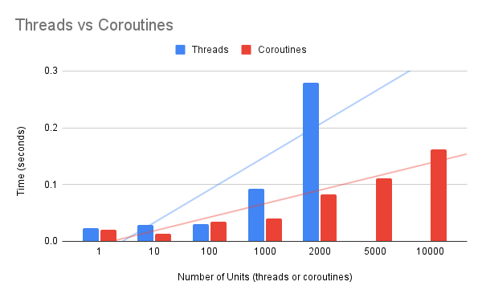

Coroutines Are Faster To Start Than Threads in Python
You can compare the time taken to create many threads to the time taken to create many coroutines.
This provides a practical way to compare coroutines to threads in the context of the often-quoted statement that coroutines are faster to create than threads.
In this tutorial, you will discover how to benchmark the time taken to start coroutines vs threads.
Let's get started.
Coroutines Are Faster to Start Than Threads
One of the benefits often mentioned when comparing coroutines to threads is:
- Coroutines are faster to start than threads.
The rationale behind this statement is that a coroutine is lightweight compared to a thread.
A coroutine is just a type of Python function that can be suspended and resumed. Whereas a thread is a Python object that represents a "thread" that is created and managed by the underlying operating system.
We can create and run coroutines as fast as the Python runtime can execute and schedule them in the asyncio event loop.
We can only create threads as fast as the Python runtime can request the underlying operating system create and start new threads.
I thought it might be interesting to explore this topic with some benchmarked examples.
We can create a large number of threads and coroutines, time how long it takes, and compare the results.
The total number of threads and coroutines that can be created on a system will be limited by the amount of main memory available. I have about 64 gigabytes of memory, so it allows a few thousand threads to be created before running out of memory, and perhaps a few hundred thousand coroutines to be created before running out of main memory.
Let's compare how fast threads are created compared to coroutines, starting with threads.
Update: I have a related tutorial on coroutines vs threads that may be interesting:
Benchmarks of Starting Threads
We can benchmark how long it takes to create different numbers of threads.
In this example, we will define a task that sleeps for one second.
The task will simulate work by iterating 10 times and sleeping for 0.1 seconds (100 milliseconds) each loop iteration.
The task() function below implements this.
The task() function below implements this.
# task to run in a new thread
def task():
for i in range(10):
# block for a moment
time.sleep(0.1)
We can then define a benchmark function that takes a number of threads to create as an argument, then creates, runs, and waits for the threads to complete, returning the duration in seconds.
Threads can be defined via the threading.Thread class and the "target" argument can specify the task() function. We can create the specified number of threads using a list comprehension.
...
# create many threads
tasks = [threading.Thread(target=task) for _ in range(n_threads)]You can learn more about running functions in a new thread in the tutorial:
Threads can be started by calling the start() method, then joined by calling the join() method, returning only once the target thread is terminated.
...
# start many threads
for thread in tasks:
thread.start()
# wait for all threads to finish
for thread in tasks:
thread.join()
We can record the time taken in seconds for creating the specified number of threads by first recording the start time and later the end time via the time.time() function.
The difference in seconds can then be returned.
...
# record start time
time_start = time.time()
...
# record end time
time_end = time.time()
# calculate duration in seconds
duration_sec = (time_end - time_start)
# return duration
return duration_sec
Tying this together, the benchmark() function below will create a given number of threads and return the time it took for them to be created and run seconds.
# benchmark running a given number of threads threads
def benchmark(n_threads):
# record start time
time_start = time.time()
# create many threads
tasks = [threading.Thread(target=task) for _ in range(n_threads)]
# start many threads
for thread in tasks:
thread.start()
# wait for all threads to finish
for thread in tasks:
thread.join()
# record end time
time_end = time.time()
# calculate duration in seconds
duration_sec = (time_end - time_start)
# return duration
return duration_sec
Finally, we can call our benchmark() function with different numbers of threads and report the result in seconds.
We will try different numbers of threads from one to 10,000.
...
# define number of threads to test creating
n_benchmark = [1, 10, 100, 1000, 2000, 5000, 10000]
# benchmark creating different numbers of threads
for n in n_benchmark:
# perform benchmark
sec = benchmark(n)
# report result
print(f'> threads={n:5} took {sec:.3f} seconds')
Tying this together, the complete example of benchmarking the time taken to create and run threads is listed below.
# SuperFastPython.com
# benchmark of starting threads
import time
import threading
# task to run in a new thread
def task():
for i in range(10):
# block for a moment
time.sleep(0.1)
# benchmark running a given number of threads threads
def benchmark(n_threads):
# record start time
time_start = time.time()
# create many threads
tasks = [threading.Thread(target=task) for _ in range(n_threads)]
# start many threads
for thread in tasks:
thread.start()
# wait for all threads to finish
for thread in tasks:
thread.join()
# record end time
time_end = time.time()
# calculate duration in seconds
duration_sec = (time_end - time_start)
# return duration
return duration_sec
# define number of threads to test creating
n_benchmark = [1, 10, 100, 1000, 2000, 5000, 10000]
# benchmark creating different numbers of threads
for n in n_benchmark:
# perform benchmark
sec = benchmark(n)
# report result
print(f'> threads={n:5} took {sec:.3f} seconds')
Running the example benchmarks the time taken to create and run different numbers of threads.
The times are specific to my system and limited by CPU speed and total memory.
We know that each task should take about 1 second, so any additional time is related to the effort required to start and manage the threads.
We can see that as the number of threads is increased, we see an increase in the times taken.
My system may be limited to creating more than 2,000 threads and less than 5,000 threads. We can see 2,000 threads took about 279 milliseconds to start and manage, whereas 5,000 tok more than 30 seconds. This suggests that creating 5,000 threads exceeded the capacity of main memory, resulting in some swapping (paging) of main memory to disk which is dramatically slower.
> threads= 1 took 1.023 seconds
> threads= 10 took 1.029 seconds
> threads= 100 took 1.031 seconds
> threads= 1000 took 1.093 seconds
> threads= 2000 took 1.279 seconds
> threads= 5000 took 35.935 seconds
> threads=10000 took 206.531 secondsNext, let's explore a similar experiment using coroutines.
Benchmarks of Starting Coroutines
We can benchmark how long it takes to create different numbers of threads.
We can update the above example for benchmarking threads to benchmark how long it takes to create and run coroutines.
Firstly, the task() function needs to be updated to be a coroutine using the "async def" expression. The call to sleep must suspend the task and call the asyncio.sleep() function using the "await" expression.
The updated task() coroutine function is listed below.
# task to run in a new thread
async def task():
for i in range(10):
# block for a moment
await asyncio.sleep(0.1)
You can learn more about the asyncio.sleep() function in the tutorial:
Next, we can update the benchmark() to create and wait for many task() coroutines instead of threads.
Firstly, the benchmark() function can be changed to a coroutine function using the "async def" expression.
Next, we can create and schedule many coroutines using the asyncio.create_task() function in a list comprehension.
...
# create and schedule coroutines as tasks
tasks = [asyncio.create_task(task()) for _ in range(n_coros)]You can learn more about creating tasks in the tutorial:
We can then wait for all tasks by awaiting the asyncio.wait() function and pass in the list of Task objects.
For example:
...
# wait for all tasks to completes
_ = await asyncio.wait(tasks)You can learn more about the asyncio.wait() function in the tutorial:
Tying this together, the updated benchmark() coroutine function is listed below.
# benchmark running a given number of coroutines coroutines
async def benchmark(n_coros):
# record start time
time_start = time.time()
# create and schedule coroutines as tasks
tasks = [asyncio.create_task(task()) for _ in range(n_coros)]
# wait for all tasks to completes
_ = await asyncio.wait(tasks)
# record end time
time_end = time.time()
# calculate duration in seconds
duration_sec = (time_end - time_start)
# return duration
return duration_sec
Next, we can define a main() coroutine to perform the benchmarking of different numbers of coroutines from 1 to 100,000.
# main coroutine
async def main():
# define numbers of coroutines to test creating
n_benchmark = [1, 10, 100, 1000, 2000, 5000, 10000, 50000, 100000]
# benchmark creating different numbers of coroutines
for n in n_benchmark:
# perform benchmark
sec = await benchmark(n)
# report result
print(f'> coroutines={n:7} took {sec:.3f} seconds')
The main() coroutine can then be used as the entry point to the asyncio program.
...
# start the asyncio program
asyncio.run(main())Tying this together, the complete example is listed below.
# SuperFastPython.com
# benchmark of starting coroutines
import time
import asyncio
# task to run in a new thread
async def task():
for i in range(10):
# block for a moment
await asyncio.sleep(0.1)
# benchmark running a given number of coroutines coroutines
async def benchmark(n_coros):
# record start time
time_start = time.time()
# create and schedule coroutines as tasks
tasks = [asyncio.create_task(task()) for _ in range(n_coros)]
# wait for all tasks to completes
_ = await asyncio.wait(tasks)
# record end time
time_end = time.time()
# calculate duration in seconds
duration_sec = (time_end - time_start)
# return duration
return duration_sec
# main coroutine
async def main():
# define numbers of coroutines to test creating
n_benchmark = [1, 10, 100, 1000, 2000, 5000, 10000, 50000, 100000]
# benchmark creating different numbers of coroutines
for n in n_benchmark:
# perform benchmark
sec = await benchmark(n)
# report result
print(f'> coroutines={n:7} took {sec:.3f} seconds')
# start the asyncio program
asyncio.run(main())
Running the example benchmarks how long creating different numbers of coroutines takes.
Each task takes one second, so this value can be subtracted from the duration to give an idea of how long each coroutine took to create, schedule, manage and terminate.
We can see a general pattern of an increase in time taken when creating more coroutines.
From about 20 milliseconds for one coroutine, 35 milliseconds for 100 coroutines to 162 milliseconds for 10,000 coroutines.
We can see things slow down at 50,000 coroutines in nearly 5 seconds, and 100,000 coroutines at nearly 11 seconds. It is not obvious that the system is swapping (paging) main memory to disk at this point. I suspect it is not and that these numbers indicate the management of the coroutines, e.g. context switching, by the asyncio event loop.
> coroutines= 1 took 1.020 seconds
> coroutines= 10 took 1.014 seconds
> coroutines= 100 took 1.035 seconds
> coroutines= 1000 took 1.040 seconds
> coroutines= 2000 took 1.082 seconds
> coroutines= 5000 took 1.111 seconds
> coroutines= 10000 took 1.162 seconds
> coroutines= 50000 took 5.839 seconds
> coroutines= 100000 took 12.026 secondsSpeed Comparison Coroutines vs Threads
We can compare the results for the speed of creating threads vs the speed of creating coroutines.
Firstly, let's create a table and compare all of the results side-by-side.
Units Threads Coroutines
1 1.023 1.02
10 1.029 1.014
100 1.031 1.035
1000 1.093 1.04
2000 1.279 1.082
5000 35.935 1.111
10000 206.531 1.162
50000 n/a 5.839
100000 n/a 12.026Next, let's update the results to remove the time taken to execute the task.
Units Threads Coroutines
1 0.023 0.02
10 0.029 0.014
100 0.031 0.035
1000 0.093 0.04
2000 0.279 0.082
5000 34.935 0.111
10000 205.531 0.162
50000 n/a 4.839
100000 n/a 11.026
Now, we can graph the results to aid in the comparison.
We can remove all values above 1 second as they blow out the scale of the graph. This lets us compare the growth in time in creating coroutines vs creating more threads.

The x-axis is nearly a log scale of the number of units.
We can see that threads are fast to create when we require 1, 10, or 100. There is not a lot of change in the number of threads.
We see a larger increase when creating 1,000 and 2,000 threads, as this likely begins to impose a burden on the operating system.
The time taken to create coroutines increases at a lower rate than the time taken to create threads.
The lower burden of creating coroutines also means that many more can be created than threads at a faster rate.
For example, it takes about 93 milliseconds to create 1,000 threads and about 40 milliseconds to create the same number of coroutines, e.g threads take twice the time
We see the same pattern at 2,000 threads vs coroutines at 279 ms vs 82 ms, showing threads are about 3x slower than coroutines to create at this scale.
It only gets worse from there, e.g. 5,000 threads are about 314 times slower to create than 5,000 coroutines and 10,000 threads are about 1200 times slower to create than 10,000 coroutines.
The table below summarizes these differences.
Units Threads Coroutines Ratio Thread/Coro
1 0.023 0.02 1.150
10 0.029 0.014 2.071
100 0.031 0.035 0.886
1000 0.093 0.04 2.325
2000 0.279 0.082 3.402
5000 34.935 0.111 314.730
10000 205.531 0.162 1268.710
50000 n/a 4.839 n/a
100000 n/a 11.026 n/a
This highlights with real numbers that threads are slower to create than coroutines and the difference in time taken get worse the more units we create.
The benchmarking has limitations
- Tests were performed using one task type, as opposed to testing different task types.
- Tests were performed once, rather than many times, and averaged or distributions of results were compared.
- Tests were performed on one system, rather than many different systems.
- Tests were performed with a log number of units rather than a linear scale of units.
It might be interesting to re-run the tests with every number of units from 1 to 10,000. It would take a while but would give a clearer idea of the growth of time for each unit type.
Try running the benchmarks yourself on your system.
What results do you see?
Let me know in the comments below.
Takeaways
You now know that coroutines are faster to create than threads.